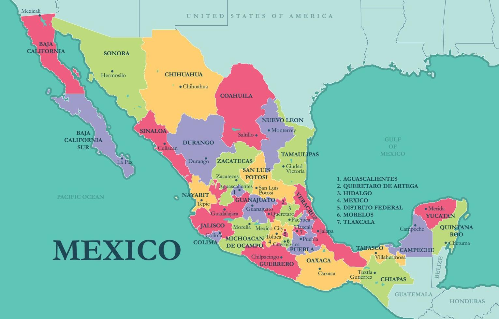
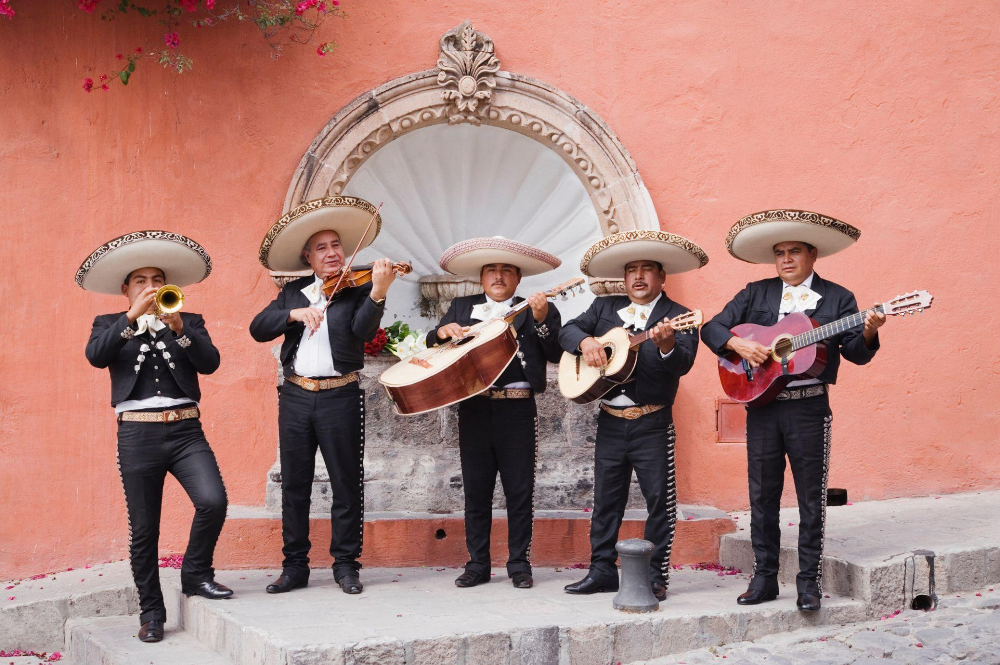
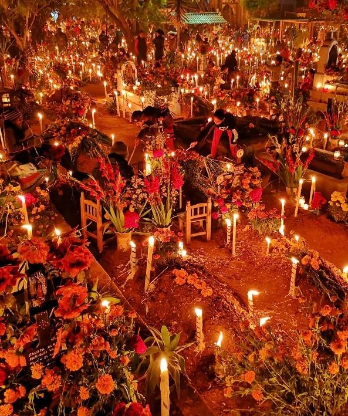
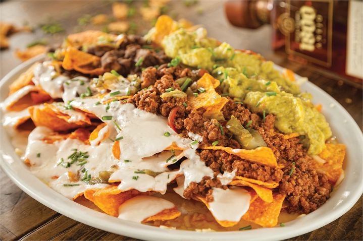
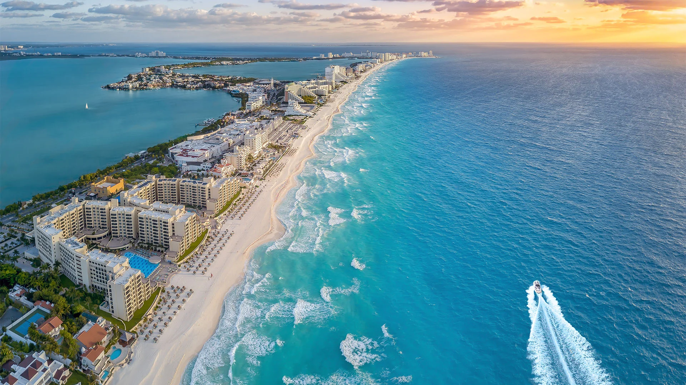
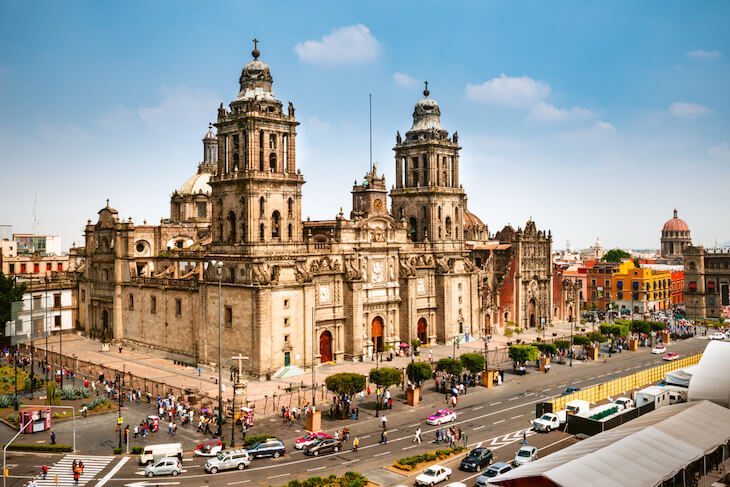

Sobre o País
O México está localizado na América do Norte e faz fronteira com os Estados Unidos, Guatemala e Belize. Sua capital é a Cidade do México, uma das maiores cidades do mundo. O país possui uma rica história, marcada pelas civilizações maia e asteca, além de uma grande diversidade cultural.
Mapa do México

Dados Geográficos
- Capital: Cidade do México
- Continente: América do Norte
- Área: 1,96 milhão km²
- População: cerca de 130 milhões de habitantes
- Idioma: Espanhol
- Moeda: Peso Mexicano (MXN)
Cultura e Tradições
A cultura mexicana é conhecida mundialmente por sua música, culinária e festividades tradicionais. Entre as tradições mais famosas estão o Dia dos Mortos, os mariachis e as danças folclóricas. A gastronomia mexicana, com pratos como tacos e burritos, é considerada Patrimônio Cultural Imaterial da Humanidade.



Infraestrutura para Eventos
O México possui estádios modernos, aeroportos internacionais e uma ampla rede de transportes. A Cidade do México, Guadalajara e Monterrey contam com instalações preparadas para receber grandes eventos esportivos e culturais.

Pontos Turísticos
O México possui destinos turísticos famosos em todo o mundo, como Chichén Itzá, Cancún, Teotihuacán e a Cidade do México. Esses locais atraem milhões de visitantes todos os anos devido à sua beleza natural e importância histórica.



